CipherBrick Pro lets you encrypt a message on your device and share only the scrambled result — through a messaging app, email, a QR code scanned across a room, or an audio signal played through a speaker. Only someone with the right key can read it. Nothing you type is sent to any server. No account is required. No internet connection is needed once the app has loaded.
Under the hood it uses AES-256-GCM, a modern authenticated encryption standard, to encrypt and decrypt text directly on your device. It also supports asymmetric encryption via a hardware security key (HKPM mode), and a built-in wizard for securely agreeing on encryption credentials with another person without saying the key aloud.
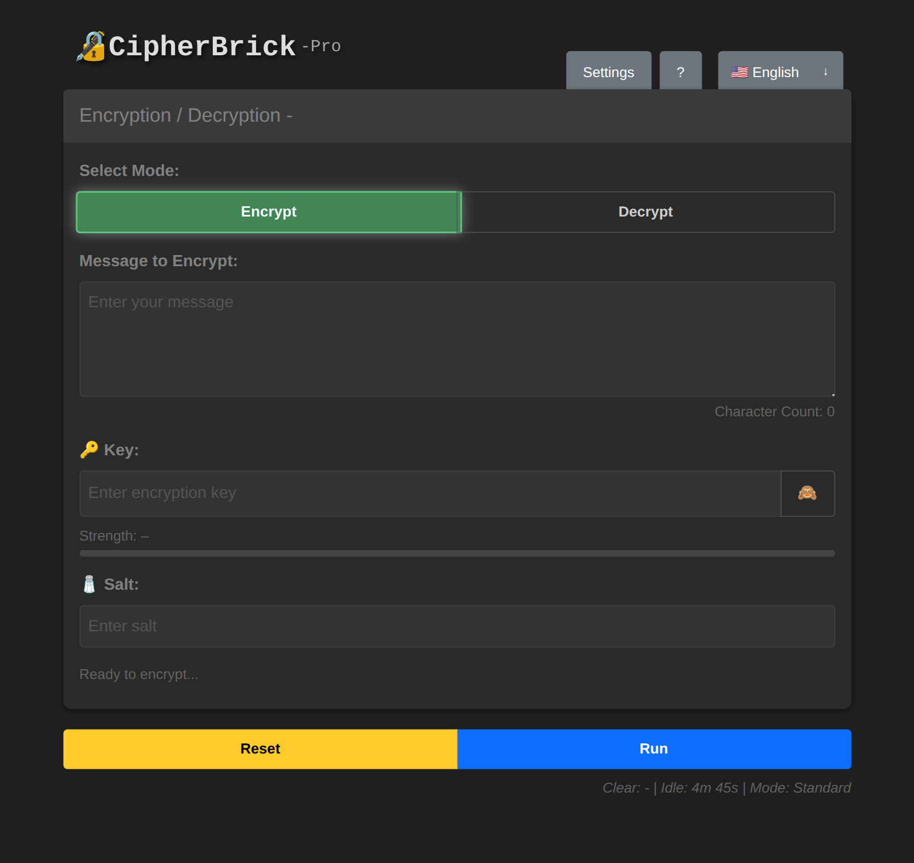
The main interface in Standard mode
Example: You need to share something sensitive with someone - account details, a private note, or personal information - over a standard messaging channel. CipherBrick Pro encrypts it on your device first. The recipient pastes the encrypted text into their own copy of the app and decrypts it using the same Key and Salt, adding a private layer to an otherwise ordinary conversation.
Get encrypting in under a minute using Standard mode.
river77). Both sides need the same value; the salt itself is not secret.The cat sat on 9 mats! is strong, memorable, and easy to share verbally with the other person.
How encryption works: your Key and Salt are run through PBKDF2 to derive an AES-256 key, which encrypts your message
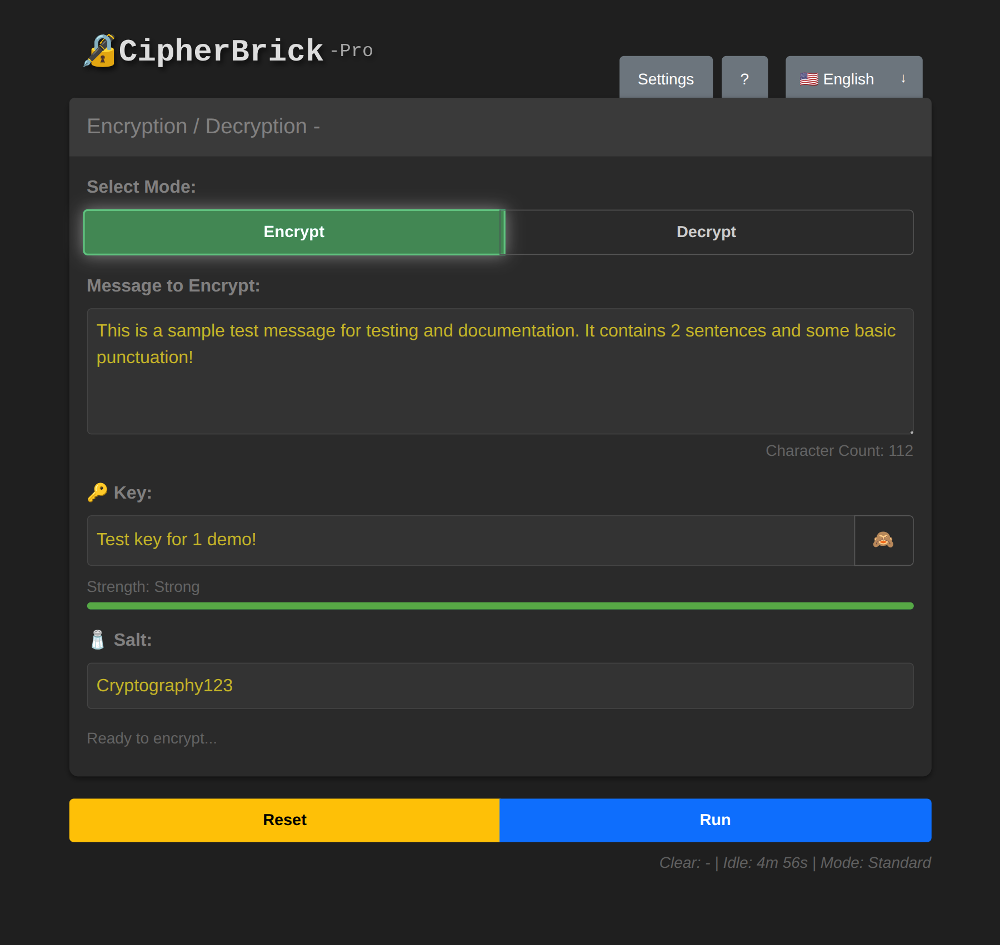
Encrypt tab with message, key, and salt filled in
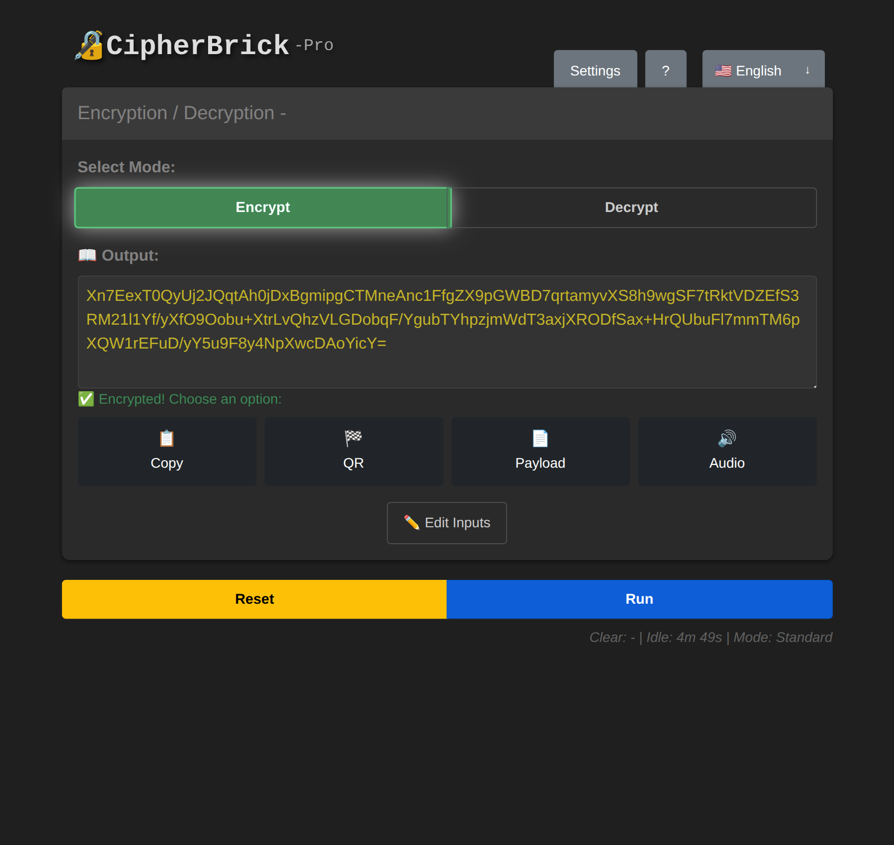
After pressing Run: encrypted output ready to share
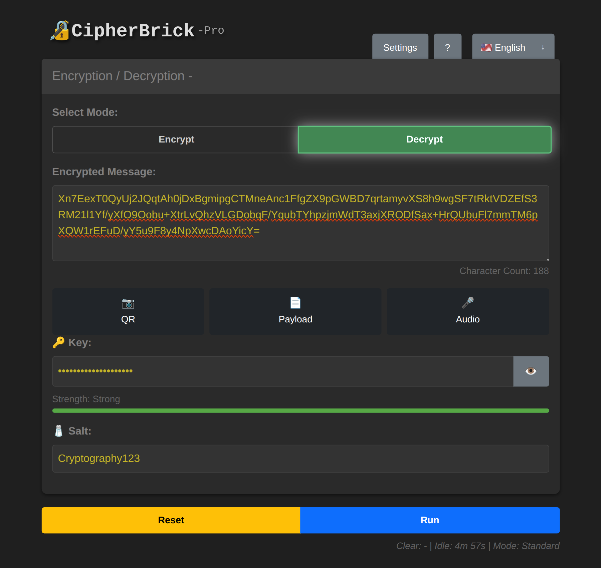
Decrypt mode: paste, scan, or receive audio to load the payload
CipherBrick Pro has three operating modes. Select one in Settings → Mode. You can change modes at any time. Previously encrypted messages remain decryptable with the same credentials.
| Mode | What you need | Best for |
|---|---|---|
| Standard | Key + Salt | Full control, any use case |
| Simple | Key only | Quick encryption, one value to share |
| HKPM | FIDO2 hardware security key | No shared secret, asymmetric encryption |
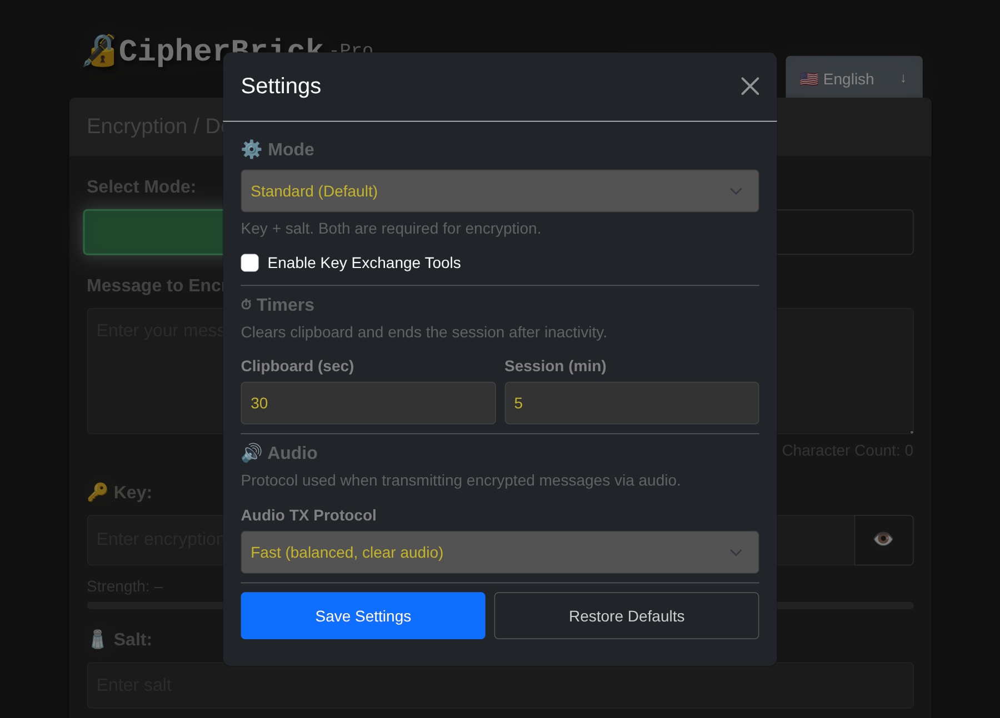
Mode selector in Settings: Standard, Simple, or HKPM
Standard mode requires a Key and a Salt. The key is your secret; keep it private and do not send it through the same channel as the encrypted message. The salt adds randomness to the encryption process and does not need to be secret, but both sides must use the same value.
Using a different salt each time means the same message encrypted with the same key will produce different ciphertext. Agree on a salt in advance or share it alongside the encrypted message.
In Simple mode, the salt is automatically derived from the key. Only one value, the key, needs to be shared. This makes it easier when you don't want to manage two separate credentials.
The tradeoff: because the salt is derived deterministically, encrypting the same message with the same key twice will produce the same ciphertext. For most casual use this is fine, but Standard mode gives stronger guarantees.
HKPM uses a FIDO2 authenticator instead of a typed key and salt. This can be a physical security key (such as a YubiKey) or a passkey stored on your device using biometrics (fingerprint, face unlock). Either way, your authenticator generates a stable cryptographic identity. Encryption is asymmetric: a message encrypted to you can only be decrypted with your authenticator present. No shared password is needed.
HKPM key model: your public key is safe to share; your private key never leaves the hardware
Setting up HKPM:
Encrypting a message to someone: paste their public key into the Recipient's Public Key field, type your message, and press Run.
Decrypting a message sent to you: paste the CBHK1 payload and press Run. Touch your key when prompted.
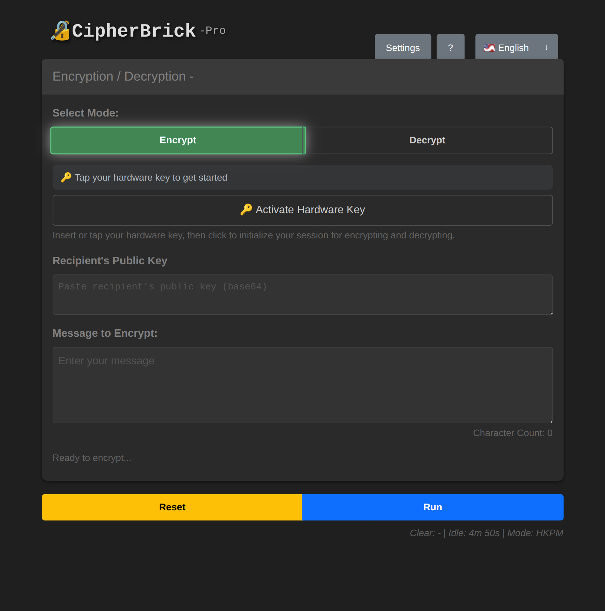
HKPM mode: hardware key UI replaces the key and salt fields
Example: You want to start exchanging encrypted messages with someone but have not yet agreed on a Key and Salt. The Key Exchange wizard handles that setup securely. Both of you exchange only public information and independently arrive at the same credentials. No need to agree on a password in advance or share anything sensitive to get started.
The Key Exchange wizard helps two people securely agree on a shared Key and Salt without ever transmitting them in plaintext. It uses ECDH (Elliptic Curve Diffie-Hellman), the same algorithm used by TLS and most secure messaging protocols.
ECDH key exchange: public keys cross an open channel; the shared secret never does
Use Key Exchange when you need to set up an encrypted channel with someone who hasn't pre-agreed on credentials. Instead of sending "the password is fluffy_cat_2024" (which anyone can read), the wizard derives a shared secret that neither party ever has to say aloud.
Key Exchange Tools are only available in Standard mode. In Settings, select Mode → Standard, then tick Enable Key Exchange Tools. A 🔑 button appears in the top-right corner of the app.
One person is the Sender, one is the Recipient. Both need CipherBrick Pro open.
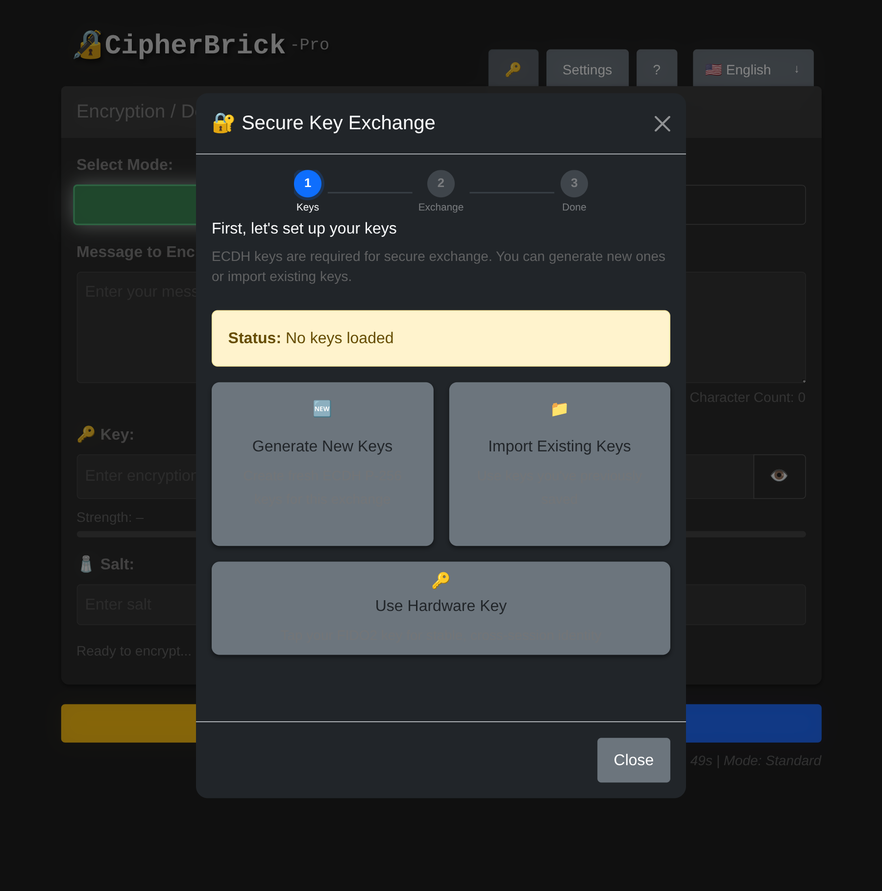
Choose your role: Sender or Recipient
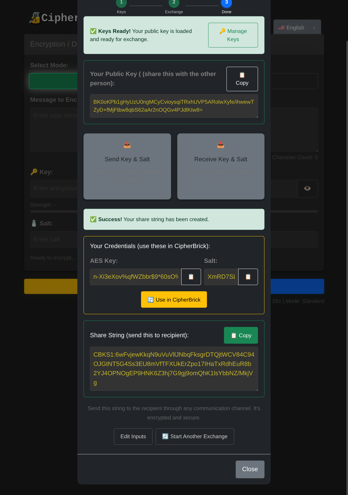
The exchange step: share your public key and paste the other person's to derive a shared secret
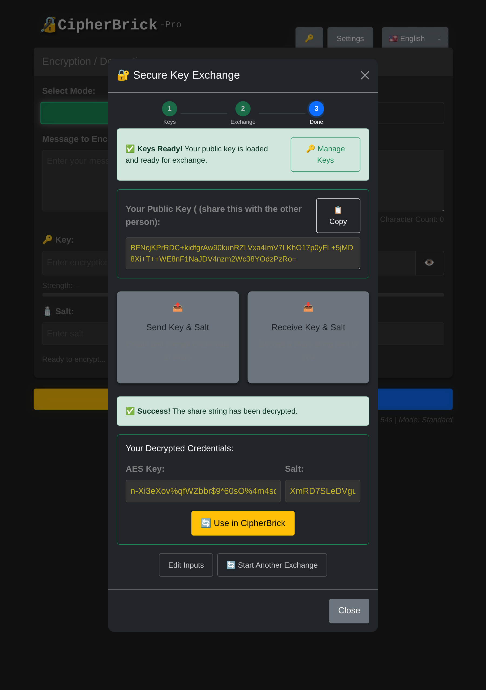
Credentials derived: click Use in CipherBrick to load the Key and Salt automatically
If you already have a key pair loaded and want to switch to different keys, click Manage Keys next to the Keys Ready indicator. From there you can keep your current keys, generate a new pair, import different keys, or clear all keys entirely.
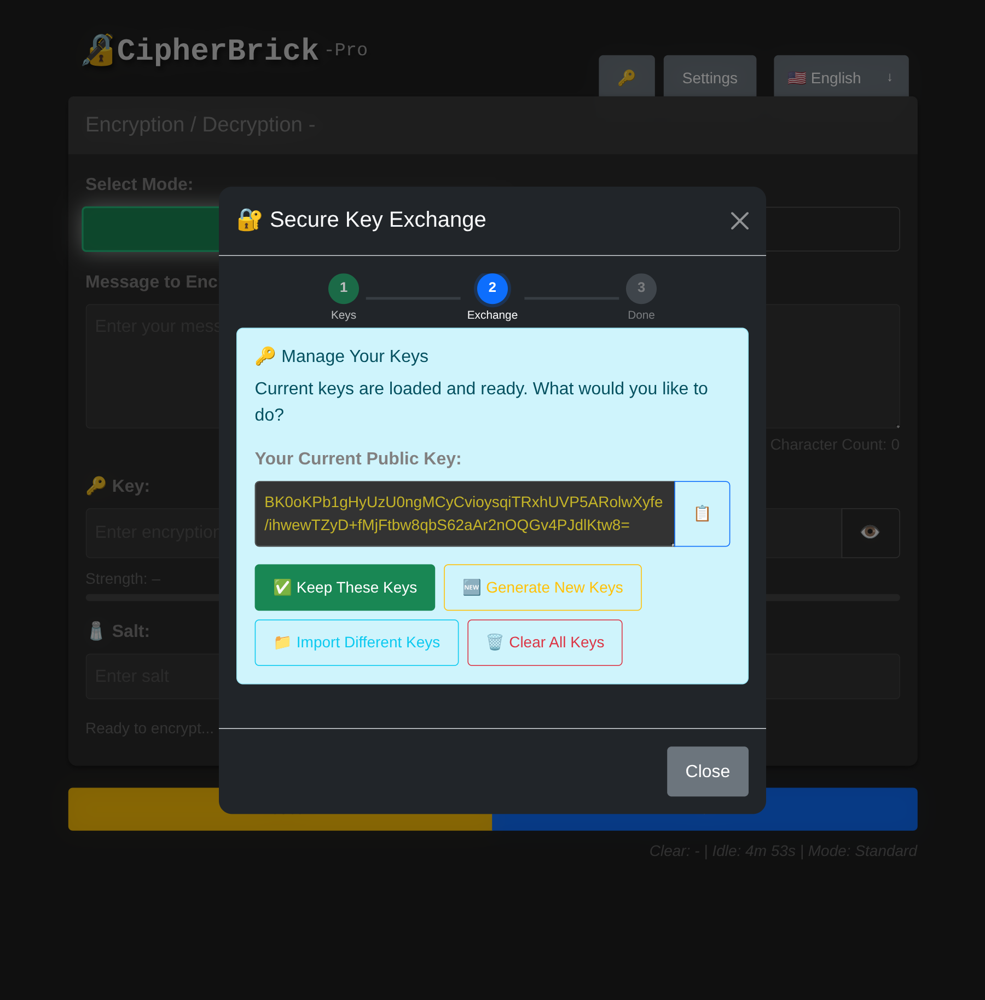
Manage Keys: review your loaded key pair or switch to different keys mid-session
Inside the wizard, selecting Use Hardware Key uses your YubiKey's stable cryptographic identity instead of an ephemeral software key pair. This is called HKKE (Hardware Key Key Exchange). The wizard produces a CBHKX1 payload that embeds the recipient's encrypted credentials, so they can unwrap them by tapping their hardware key. No separate public key paste is required.
Example: You receive sensitive messages from multiple people and want a simpler approach than managing a shared password with each of them. In HKPM mode, you share your public key once. Senders encrypt directly to you using it. Only your hardware key or device passkey can decrypt those messages. No shared credentials to set up or keep track of.
You need a FIDO2 authenticator with PRF extension support. There are two options:
| HKPM | HKKE | |
|---|---|---|
| What it is | Full encryption mode | Key Exchange using your hardware key identity |
| Where to find it | Settings → Mode → HKPM | Key Exchange Wizard → Use Hardware Key |
| Output format | CBHK1 payload | CBHKX1 payload |
| Sender's public key | Embedded in payload | Embedded in payload |
| Recipient needs | Their hardware key to decrypt | Their hardware key to unwrap shared credentials |
Your hardware key produces the same cryptographic identity on any device. Carry the key, and you carry your identity. On a new device, you will be prompted to register the key the first time. Subsequent sessions use a cached credential ID for faster activation.
Activating your hardware key starts an in-memory session. The derived keys are never written to disk. When the session times out (default: 5 minutes of inactivity), all in-memory hardware key state is cleared and you will need to re-activate on the next use.
After encrypting, four sharing options appear: Copy, QR, Payload, and Audio. In Decrypt mode, the receiving options are QR (scan), Payload (paste), and Audio (listen).
QR generates a scannable code containing the full encrypted payload. The recipient opens CipherBrick Pro, switches to Decrypt, and presses QR to scan it with their camera.
QR is the most reliable transfer method. It has no timing dependency and works in any environment. It is best suited for in-person transfer.
Audio transmits the encrypted payload as an acoustic signal using the GGWave protocol. The recipient opens CipherBrick Pro, switches to Decrypt, presses Audio, and holds their device near the sender's. Start transmission on the sender's side.
Audio works best in quiet environments within about one metre. Microphone permission is required on the receiving device.
Audio protocols (configurable in Settings → Audio):
| Protocol | Speed | Audible | Best for |
|---|---|---|---|
| Normal | Slowest | Yes | Noisy environments, maximum reliability |
| Fast (default) | Moderate | Yes | Most situations |
| Fastest | Quickest | Yes | Short messages, quiet environment |
| [Ultrasound] Normal | Slowest | No | Silent transfer, close range |
| [Ultrasound] Fast | Moderate | No | Silent, balanced |
| [Ultrasound] Fastest | Quickest | Varies | Device-dependent reliability |
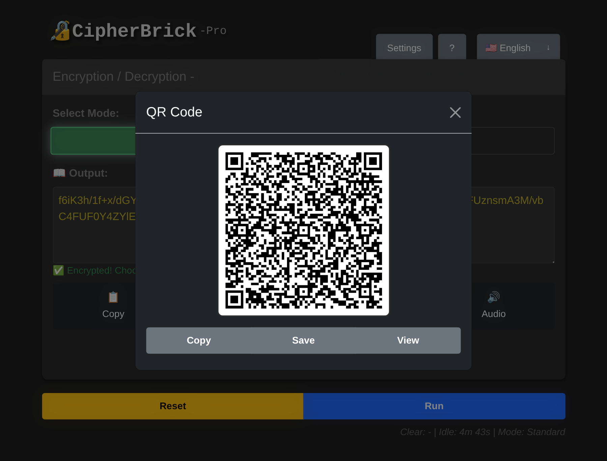
QR output: scan this with the other device in Decrypt mode
| Data | Location | Cleared when |
|---|---|---|
| Mode preference | localStorage | Restore Defaults |
| Timer settings (clipboard & session timeouts) | localStorage | Restore Defaults |
| Hardware key credential ID | localStorage | Restore Defaults or clearing browser data |
| Key Exchange wizard session keys | sessionStorage | Tab close, session timeout, or 1-hour expiry |
The session timeout (default: 5 minutes of inactivity) clears all in-memory state and sessionStorage, including input fields, output, wizard keys, and hardware key sessions, then resets the page to its initial state.
The clipboard timeout (default: 30 seconds) replaces any copied CipherBrick output in your clipboard with an empty string, reducing the window during which a lost or stolen device could expose a copied payload.
CipherBrick Pro makes no network requests during normal operation. All encryption, decryption, key generation, and key exchange happen locally. The service worker caches all app assets for fully offline use. After the first visit, an internet connection is not required.
All encryption uses AES-256-GCM via the Web Crypto API built into your browser. HKPM and the key exchange wizard use ECDH P-256, also via Web Crypto. No custom cryptographic implementations are used; only the browser's native, audited primitives.
No. The exact same key and salt used for encryption are required. Even a single character difference will cause decryption to fail with no output.
The key is your secret password. The salt modifies how the key is used inside the key derivation function (PBKDF2), which produces the actual AES-256 encryption key. Using a unique salt each time means the same password won't produce the same ciphertext twice, even for identical messages.
Yes, for most use cases. 500 characters covers a paragraph of text. The limit keeps QR codes scannable and audio transmission reliable. For longer content, split the message across multiple encryptions.
Yes. CipherBrick Pro is a Progressive Web App (PWA). On iOS, open it in Safari, tap the Share icon, and select "Add to Home Screen." On Android, open it in Chrome and tap "Add to Home Screen" or "Install App." It works offline after installation.
Firefox does not support the PRF (Pseudo-Random Function) extension that HKPM depends on, on any platform. Use Chrome 115+ or Edge 115+ on desktop, Chrome 120+ on Android, or Safari 17+ on iOS 17+.
Yes. Public keys are designed to be shared openly. In both HKPM and the key exchange wizard, your public key can be posted anywhere without compromising security. The corresponding private key never leaves your device or hardware key.
Reset clears the input, output, key, and salt fields. It does not affect your settings, hardware key session, or wizard keys.
All input and output fields are cleared, sessionStorage is wiped (including wizard keys and hardware key sessions), and the app returns to its initial state. Your settings (mode preference, timer values) are stored in localStorage and are unaffected.
No. AES-256-GCM is computationally infeasible to break without the key. The ciphertext is safe to transmit over any channel, including public ones.
Move the devices closer (within one metre). Reduce background noise. Switch to Normal protocol in Settings → Audio for maximum reliability. Ensure microphone permission is granted on the receiving device.